Introduction
Thanks for installing Discogs Enhancer!
This is the “Learn” page. Here you will find in-depth explanations on each feature in the extension.
How To Use It
When you are on Discogs.com click on the extension's icon (the small, black record icon) in Chrome's toolbar and the extension’s menu will open. Click here to learn how to pin Discogs Enhancer to Chrome's toolbar if you don't see it in the upper right hand corner of the browser.

Once Discogs Enhancer is open you will see the list of features that can be enabled and disabled. Next to each feature is a small (?) icon. You can move your mouse over the (?) icon to read a short description of what it does. You can also click the (?) icon to be taken to that feature's section here in the "Learn" page.
A green switch means the feature is enabled; a gray switch means it is disabled. Once you enable/disable a feature your preference will be saved until you decide to change it.

Some features have sub-menus with options. These features are identified by the “>” icon before the feature name. Click on the feature name to open up the sub-menu to enable/disable the feature. For features with options it is recommended that you read their description here in the "Learn" page to fully understand how they work.


Pro tip: You can use the search box in the popup menu to search for keywords like "marketplace", "collection", "profile", etc... and it will only show you features that are designed to work in that particular section of Discogs.
Pro tip: You can click on the "?" icons in the popup menu and go directly to the feature's description here in the Learn page.
Block Buyer Shortcuts
Adds a "Block Buyer" button to the order invoice page that allows you to block the buyer directly, without having to go into your Seller Settings page.
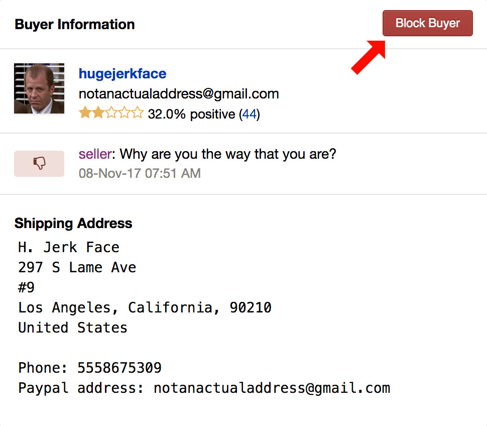Block Sellers
Blocks any seller from showing up in the Marketplace or tags them in red and labels them as "Blocked seller". Names can be easily added or removed through the "Edit list" link found in the popup menu.
Important! the maximum number of sellers you can put on your blocked list is approximately 400. If you exceed this number the feature will no longer work.
To block a seller from the Marketplace, hover your mouse over the seller's name for about one second. The block seller button will appear below:
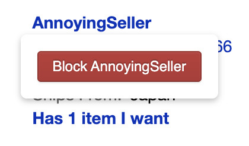Click the block button to add the seller to your blocked list. Then refresh the page to put the block into effect.
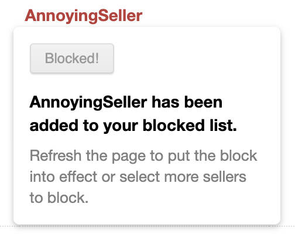Blocked Sellers settings can be found in the extension's popup menu. Click "Edit list" to see every seller on your blocked list. You can remove a seller from the list by clicking on their name.
You can also set the type of block that will be used in the Marketplace:
The Tag Sellers setting (default) will mark blocked sellers in red while still allowing you to place an order with them.
The Hide sellers everywhere option will hide all blocked sellers throughout the Marketplace.
The Hide sellers in the Marketplace option will hide sellers in your Marketplace Wantlist but they will still be visible and marked in red on an individual release page.
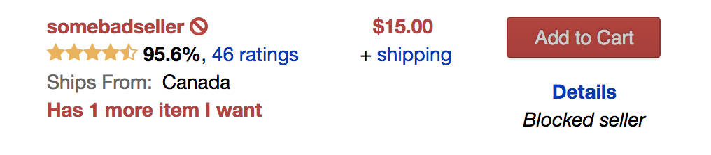Note: This feature will not track seller username changes so if a seller changes their username, you will have to add the new username to the blocklist.
Collection Box Location
Moves the In Collection / In Wantlist boxes back to their original locations on the Release Page.
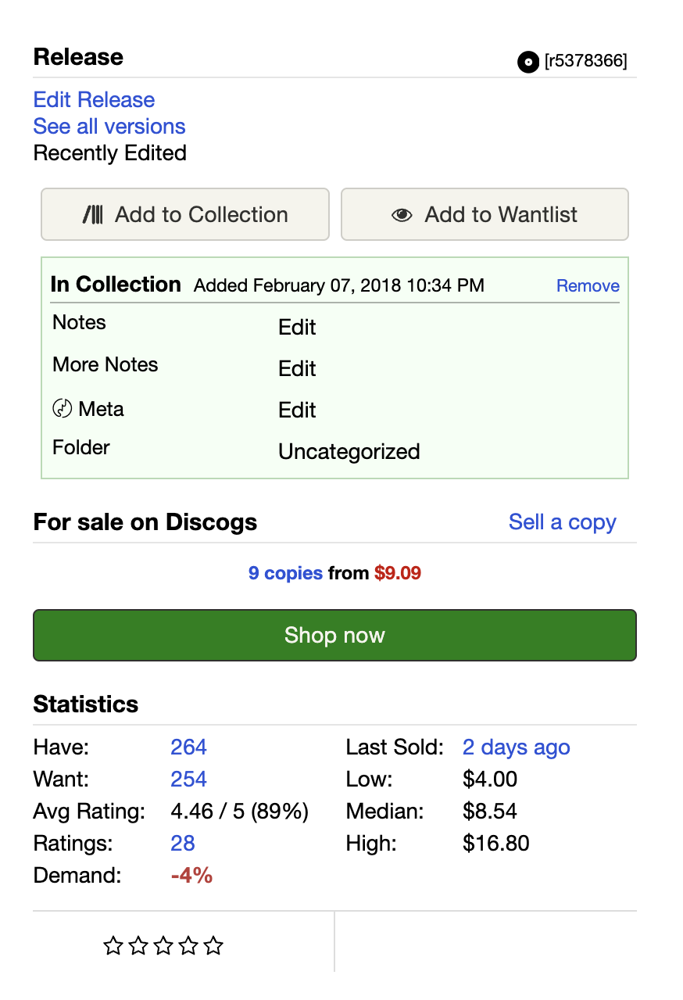Compact Artist & Label Pages
Reduces the overall white space around the release images and the filter side bar on Artist and Label pages. You can toggle this feature on/off and see the effects without having to refresh the page.
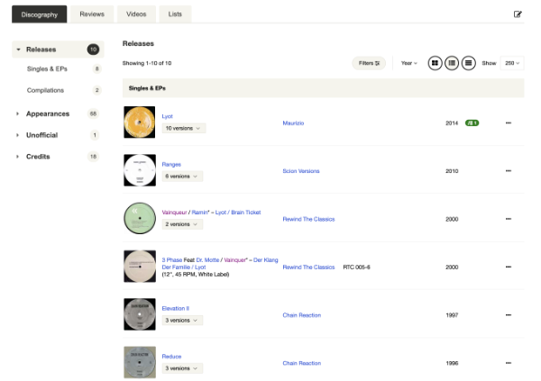Compact Collection Header
Reduces the overall white space in the header section of the Collection page, removes the top pagination navigation links, reduces font sizes, and moves some UI elements around in order to mimic the old Collection page layout.
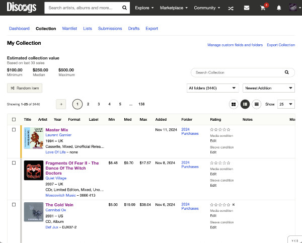Confirm Before Removing Items
This feature ensures that when you click 'Remove' on a Release page, you will be prompted to confirm the removal of an item from your Collection. Particularly useful for those who maintain notes on their releases, this confirmation step helps prevent accidental loss of notes due to unintentional clicks on 'Remove'.
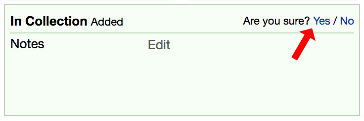Contextual Menu Options
Lets you search Discogs or other online record shops with any text selected on any webpage. Simply highlight some text, right click, and choose the shop you want to search. You can configure which shops you want to use by clicking on the "Contextual Menu" option inside Discogs Enhancer's popup.
Currency Converter
Convert between any of the currencies Discogs supports with the on-screen Currency Converter.
Step 1: Click the '¥ € $' button in the lower-right corner of the screen.

Step 2: Choose the seller's currency with the select box labeled 'Convert'.

Step 3: Then select your currency by choosing an option from the select box labeled 'To'.
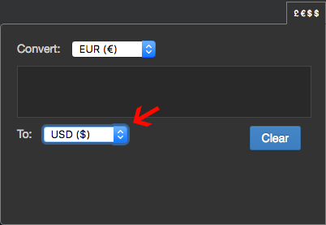Step 4: Now simply type the value into the box and see your results instantly!
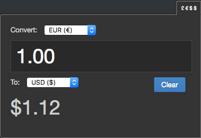(Price conversions are an estimate and may not match exactly with Discogs' own conversions.)
Dark Theme
This makes Discogs much easier on the eyes at night... or all the time. There are currently three different themes to choose from: Meteor, Gravity, and Nebula.
- ☄️ Meteor: This is the original Dark Theme that Discogs Enhancer launched with.
- 🌎 Gravity: A darker version of Meteor.
- ✨ Nebula: The darkest of the three themes.
Sync:
Select Sync if you'd like Discogs to automatically switch between light and dark modes in sync with your operating system's transition.
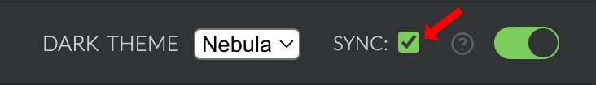Note: The Dark Theme does not work on Discogs subdomains (e.g.: blog.discogs.com, data.discogs.com, etc...)
Demand Index
"The Demand Index represents the Want-to-Have ratio of a release, expressed as a percentage. It provides a quick snapshot of the demand for a specific release. A negative value indicates more Haves than Wants, while a positive value signifies more Wants than Haves. A value of 0 denotes an equal number of Wants and Haves.
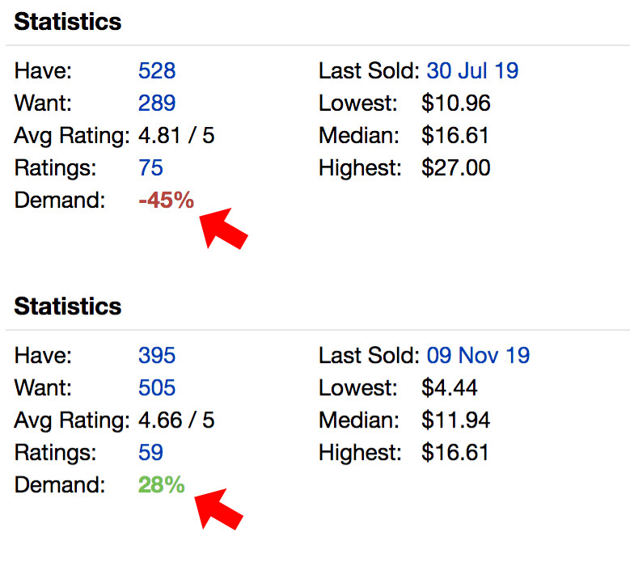Editing Notepad
A Notepad that you can type notes into while editing releases. These notes will be saved across different editing and browser sessions.
The Notepad can be expanded by clicking the flyout tab on the right side of the screen while editing a release, master release, artist, label, or images.
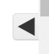From here you can click the "Edit" (✎) button to edit your Notepad...
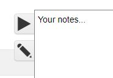and then "Save" (✔) it using the same button
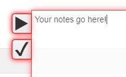If you paste in a URL, it will be auto-formatted for you and turned into a clickable hyperlink, so that you can click on it without needing to manually copy/paste.
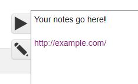Note: The notes in the Notepad will be cleared if you clear your Discogs data in your browser, as it is stored in Local Storage. It will also not be saved if you browse using Private/Incognito mode and then close your browser.
This feaure was developed by ToastyMallows!
Everlasting Marketplace
The Everlasting Marketplace feature allows for uninterrupted scrolling through Marketplace listings, automatically loading more results as you reach the bottom of the page.
To modify your Marketplace filter criteria (e.g., Currency, Genre, Media Condition), click the 'Back to top' link, which will direct you to the filter options at the top of the page for adjustments.
As you scroll, page numbers are inserted between each result set. To quickly navigate between any previously loaded sets of results, use the 'Select Page' dropdown menu.
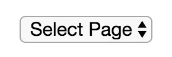Pro tip: You can stop Everlasting Marketplace from loading more results by clicking the Pause button at the top. 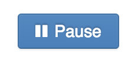
Favorite Sellers
Save your favorite sellers and a small blue checkmark icon will appear next to their names in the Marketplace. Adding or removing names is effortless – just click 'Edit list' on the popup menu and follow the instructions provided.
Note: This feature does not work like Block Sellers - you have to add sellers names through the "Edit list" link in the extension's menu.
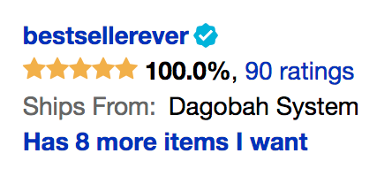Feedback Notifications
The Feedback Notifier monitors your feedback stats for changes and alerts you when a new one shows up.
Notification badges will appear at the top of the page. "S" for Seller notifications and "B" for Buyer notifications:
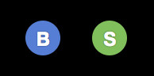You can dismiss the notification by hovering over the badge and clicking the "X" that appears:
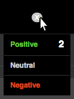Or you can click on the submenu and go directly to your Positive, Neutral, or Negative feedback pages:
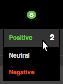Filter Countries
Filters items in the Marketplace that ship from specified countries.
After adding the specified countries to your list you can configure this option in three ways:
1. Include: Only show items in the Marketplace that ship from the countries on the list. Use this option when you only want to buy from one or more countries. For example, it's ideal if you are in the US and are only interested in items that ship from the United States. Enter "United States" on your list and choose the "INCLUDE ITEMS FROM COUNTRIES" radio button.
2. Exclude: Do not show any items in the Marketplace that ship from the countries on the list. Use this option when you do not want to buy items from one or more countries. For example, if you live in Europe but do not want to purchase items that ship from the US, Canada, and Australia, enter "United States", "Canada", and "Australia" on your list and choose the "EXCLUDE ITEMS FROM COUNTRIES" radio button.
3. Currency Filter: Only filter items in the Marketplace when using a Currency Filter. When you enable this option, filtering will only be applied when you use a Currency Filter in the Marketplace: 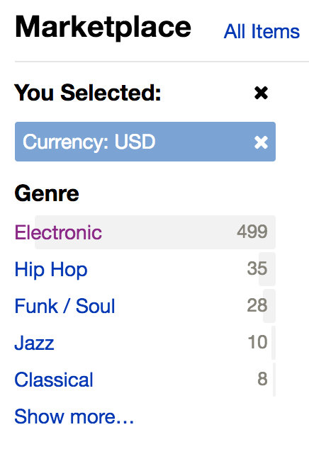
Pro tip:You can toggle the option on/off to show/hide items that have been filtered.
Filter Media Condition
Hide all items in the Marketplace that are below a specified media condition.
For example, if you select "Near Mint", only Mint and Near Mint condition items will be shown. If you select "Very Good", only Mint, Near Mint, Very Good Plus, and Very Good items will be shown (etc …).
When results have been filtered, you will see a note that says Filtering items below [condition] next to the pagination links.
Pro tip:It's worth noting that this simply hides these items from view. So if there are 25 items per page and 5 of those are hidden, you will only see 20 results on that particular page.
Filter Prices
Hides all items that are below a minimum value or above a maximum value in the Marketplace.
How to use the Filter Prices feature:
First choose your currency from the select box. It must be the same currency you use on Discogs. If you're using the Suggested Prices feature, the value should already be set:
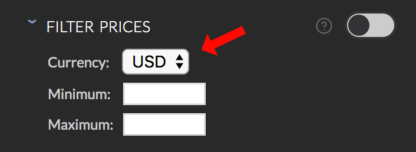Next, enter a minimum and/or maximum value in each input. You can enter only one if you like.
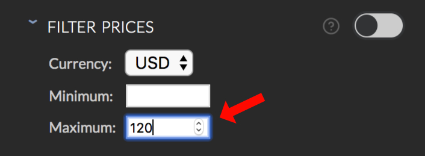Then turn the feature on and refresh the page to begin filtering.
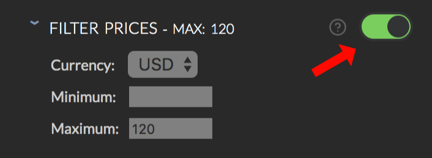Important: If you use the Suggested Prices feature, changing the currency value in Filter Prices will also change the currency value in Suggested Prices.
Filter Sleeve Condition
Hide all items in the Marketplace that are below a specified sleeve condition.
For example, if you select "Near Mint", only items with sleeves in Mint and Near Mint condition will be shown. If you select "Very Good", only Mint, Near Mint, Very Good Plus, and Very Good items will be shown (etc …).
You can also hide items with "Generic" and "No Cover" sleeve conditions. Note: If you select both "Generic" and "No Cover", items that do not have a sleeve condition listed will also be hidden.
Caution:Be careful using this feature with the Filter Media Condition feature. Having both of these features active at the same time can hide A LOT of items in the Marketplace.
Pro tip:It's worth noting that this simply hides these items from view. So if there are 25 items per page and 5 of those are hidden, you will only see 20 results on that particular page.
Filter Unavailable Items
Hides items in the Marketplace if they are unavailable in your country.
Full Width Pages
Makes the Collection, Wantlist, Order, Orders, Purchases, and Inventory pages expand to the width of the browser. This effectively reverts the recent change that forces a fixed width on these pages.
Hide Min, Median, Max Columns
This hides the Min, Median, Max columns in the collection page. Helpful if you'd like more space when viewing your collection.
Inventory Ratings
Marks an item's rating in red if it is above the value set in the option when viewing a seller's inventory.
Useful for when you are simply browsing a seller's inventory for items that are not on your Wantlist but might be worth checking out.
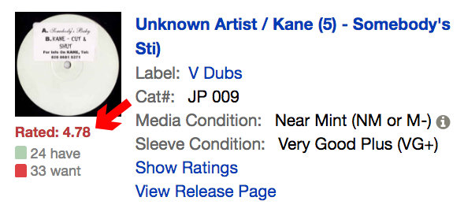To set a value, click on the feature name to open the submenu. Enter the minimum rating value a release should exceed in order to be tagged in red. Then turn the option on and refresh your page.
Inventory Scanner
The Inventory Scanner is a feature for Sellers that will scan a single page of your inventory and mark any release that is a set percentage below the median Marketplace price.
Note: I have only tested this with listings in USD. If you use a different currency and have issues please let me know!
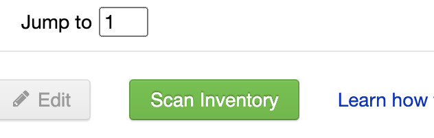You can set the set the percentage threshold in the popup - it can be any value between 0 and 99:
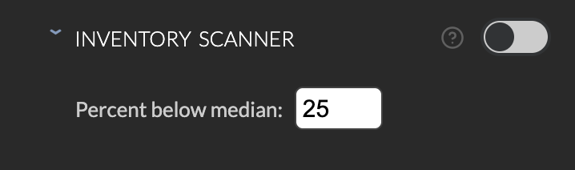Then view your inventory and click "Scan Inventory". The scanner will comb through your items from top to bottom and mark any items that are below the median value with a green flag:
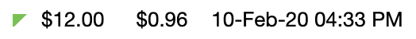Shoutout to TheMightyChew for suggesting this feature!
Large BAOI Fields
Makes the Barcodes and Other Identifiers fields larger when you are editing a release. Helpful if you're working with longer texts on a release. (Click on the images below to enlarge them.)
Before:
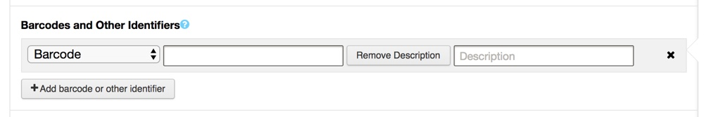
After:
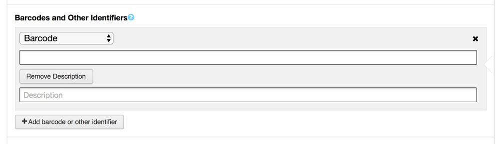
{kind=link}
{kind=link}
Large YouTube Playlists
Doubles the maximum size of the YouTube playlists on a release or list page. Helpful if there are a lot of videos and you want to be able to see more of them at once.
Please note: if there are only a few videos on a page, the size of the playlist won't change. You'll only see a larger playlist if there are more than three videos with a maximum of 6 visible at any given time.
Marketplace Highlights
Makes it easier to see what condition items are in by colorizing the Media and Sleeve conditions in the Marketplace with the following colors:
- Mint
- Near Mint
- Very Good Plus
- Very Good
- Good Plus
- Good
- Fair
- Poor
Marketplace Ratings
Allows you to see the number of votes the release has received within the Marketplace results. If you've ever found yourself browsing another seller's inventory for other items you might want that aren't on your Wantlist, you can use this feature to see a release's rating stat without having to open another page.
To see ratings, simply click the link that says "Show Ratings". It will be located above the "View Release Page" link on each release listing.
You can click the rating and it will open up the stats for that release in a new page where you can see the number of ratings, the haves, the wants, and the rating distribution.
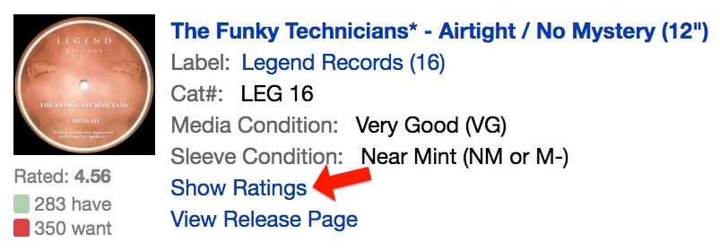 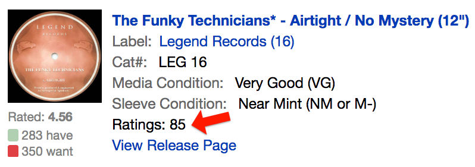Notes Counter
Counts the characters in any "notes" field in your collection/wantlist so you will know when you're getting close to the maximum character limit (255). It can be useful if you like to keep a lot of notes about your collection and you find you frequently run out of space mid-sentence.
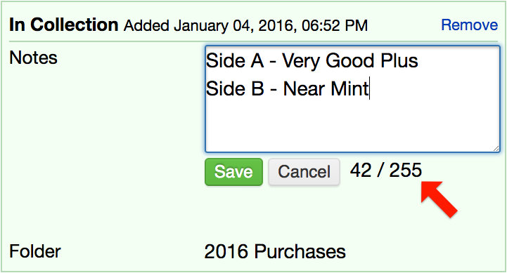Old Artist & Label Pages
Reverts the Artist and Label pages to their old layouts. Not sure how long this feature will continue to work so enjoy it while it lasts!
Open Links In New Tabs
Opens links in new tabs/windows when clicking on links throughout various sections of Discogs as outlined below.
Artists
Any release link, thumbnail, or list.
Collection
Any release text link.
Dashboard
Any link inside a dashboard module.
Labels
Any release link, thumbnail, list, or list author.
Lists
Any link on a list.
Marketplace
Any item link, thumbnail, seller, or label link.
Release
Any Tracklist link, Companies link, Credits link, Recommendation link, and Last Sold link.
Wantlist
An item link or thumbnail.
Original Dashboard Link
Clicking the Discogs logo in the header will take you to your Dashboard when this is enabled. When this feature is enabled the Dashboard icon in the nav will be hidden.
Quick Search Releases
Lets you search for the release on Google in a new tab by clicking the release's title.
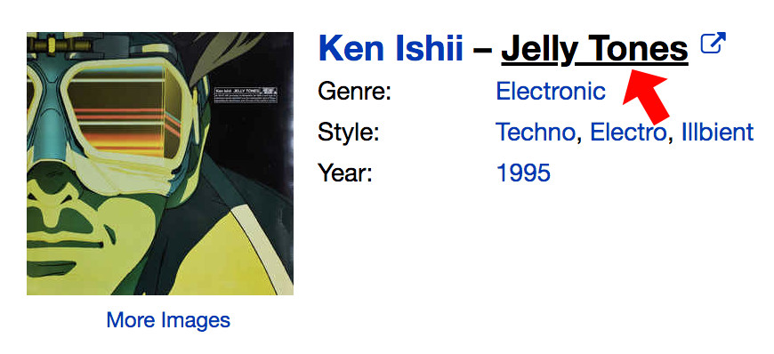Quick Search Tracklists
Lets you search for the track on Google in a new tab by clicking the release's track title.
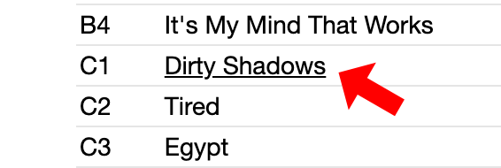Random Item Button
This will add a button to the nav bar that will show you a random item from your collection when clicked.
The functionality is identical to the "Random Item" feature in the Collection page but allows you to access it from the nav bar rather than going back to the Collection page and clicking "Random Item" again.
You have to be logged in for this feature to work.
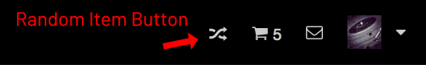Pro Tip: This is one of my favorite features in Discogs Enhancer!
Rating Percentage
Displays the release ratings expressed as a percentage.
For example if a release's average rating is 4.74, "95%" will be displayed next to it.
Note: this feature will not recalculate the percentage the moment you add/remove/change your rating. If you want to see the new percentage after changing your rating, you have to refresh the page.
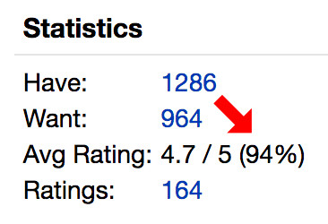Release Durations
Shows the total playing time of a release (if track times are provided) at the bottom of the track list.
Note: Total playing time depends on durations being entered correctly on the release. Incorrect entries will result in errors in total playing times.
Release Scanner
This will "scan" a single page of releases and count the number of comments on each release on any Artist or Label page. Think of it as a quick way to get an idea of which releases are being talked about. Once a page has been scanned, release links will open in a new tab/window.
If there are comments on a release a small gray badge with the number of comments will be appended to the release. If there are no comments, nothing is appended.
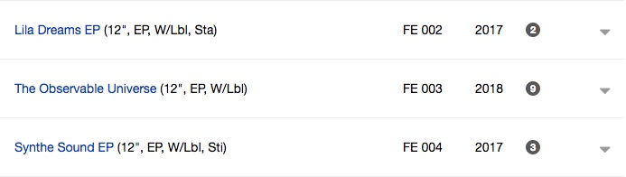To scan a page of releases click the "Scan Releases" button near the top portion of the page:
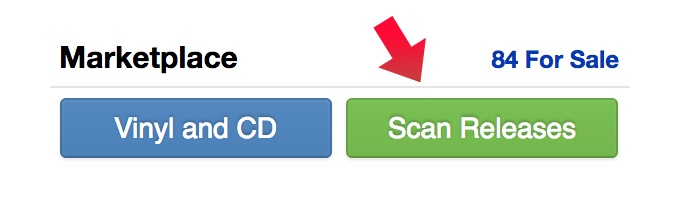Pro Tip: You can hover over the badge to see the rating and number of votes each releases has received. Clicking the badge will open the release in a new tab.
Note: Scanning is rate-limited to 1 scan per second in accordance with Discogs' rate-limiting rules.
Shoutout to Mark Anthony's Music Picks for coming up with this idea in the first place!
Remove From Wantlist Shortcuts
This will insert "Remove From Wantlist" links into each item in the Marketplace when viewing "Items I want". It allows you to remove the item from your wantlist without having to view the release page and remove it from there.
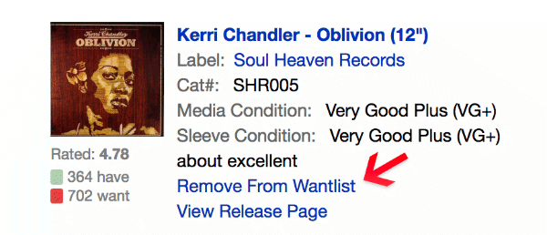After you click "Remove From Wantlist" you'll be prompted to confirm the removal. Click "Yes" and the item will be removed.
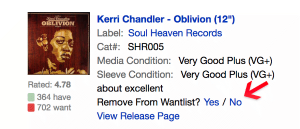Shopping Spree Mode
Shopping Spree Mode lets you stay in the Marketplace / Seller's inventory page while the item is added to your cart in the background.
This also works nicely with the Show Sellers In Cart feature if you have that enabled.
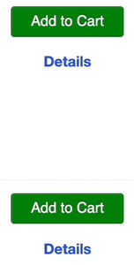Show Actual Dates
Shows the actual date an item was added to your Collection.
You can toggle between the actual and relative dates by hovering over the date.
Note: The earliest date that can be shown is August 20th, 2009 12:00 AM since this data was not tracked prior to this date.
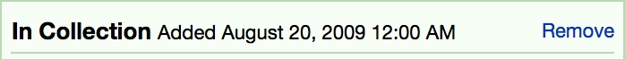Show Relative Last Sold Dates
See the relative time an item was last sold on the Release page. e.g.: Last Sold: 3 months ago Actual last sold dates are shown when you hover over the link.
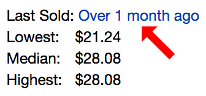Show Average Price
Shows the average price an item has sold for. The average is appened to the bottom of the price history on each release.
Generally, the average price of an item is close to the Median — however sometimes there is a sizable difference between the two. This is just another data point to consider when deciding to buy or sell a release.

Show Sellers In Cart
Adds a shopping cart icon next to any seller's name in the Marketplace when you have items of theirs in your cart.
Why would you want to use this? Well, if you're like me, you put a lot of items in your cart as you browse and leave them there for days/weeks on end. If that's the case, when you use this feature you'll be able to immediately know if you already have an item from this seller in your cart which can help you save on shipping costs.
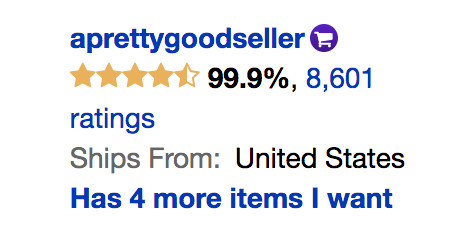Sort Buttons
This adds Sort A-Z buttons on all kinds of things. You can sort the dialog boxes on the Explore page, your personal lists in the 'Add to list' dialog boxes, and any filter within the Marketplace.
The first click sorts A-Z, the second click sorts Z-A and the third click returns the list to its original state (aka undo).
Sort By Total Price
Sorts items by price automatically any time you click to sort by the Price column in the Marketplace. You'll notice it's working when the column name changes to "Total Price" after you've clicked to sort.
It also sorts items unavailable in your country to the bottom of the list when sorting from lowest first, as these would tend to appear cheaper due to the shipping cost not being tabulated.
For best results set Discogs to view 250 listings at a time to incorporate more items, as this sorts all listings currently loaded on the page, but does not automatically pull in prices from any further page results. This is compatible with the Everlasting Marketplace feature but results will be sorted one page at a time.
This feature was created by Jon Uleis (@MovingToTheSun) who was kind enough to let me include it in Discogs Enhancer. Thank you Jon! Check out his fantastic portfolio of work at jonuleis.com!
Suggested Prices
Shows the prices that Discogs suggests and compares them to the seller's price. It's useful for seeing if an item is priced fairly. In order for this to work you must be registered as a seller.
How to use the Suggested Prices feature:
First choose your currency from the select box. It must be the same currency you use on Discogs:
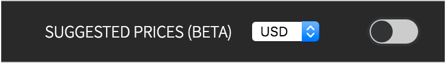Next, turn the option on:
For release pages, the comparisons are displayed automatically.
For pages like Wantlists, Seller pages, or Master Releases, a link is inserted into the page:
Clicking this link will show the comparison for that particular listing:
Results are displayed in the currency that is set in your Seller settings on Discogs.
Because currencies shift due to global market fluctuations and release prices shift due to market demand, the recommended price may differ from the listed price.
Exchange rate data is calculated every two hours (except on weekends when Markets are closed). Discogs uses a different exchange service so their exchange rates might differ slightly from Discogs Enhancers' rates. Use and interpret at your own risk. Please don't use it as an excuse to be a jerk to sellers.
Important: If you use the Filter Prices feature, changing the currency value in Suggested Prices will also change the currency value in Filter Prices.
Tag Seller Rating
Tags or hides any Seller who's rating is below the percentage specified in the option's submenu. Simply click Tag Seller Rating, enter a percentage in the box and turn the feature on.
You can also choose one of seven different tag colors.
You can also hide these sellers by checking the "Hide sellers when below rating" checkbox.
Additionally, You can hide new sellers by checking the "Hide new sellers" checkbox.
Pro Tip: you can use tenths of a percent like: 95.5
Text Format Shortcuts
Adds several buttons to reviews, comments and forum/group reply boxes that allow you to quickly insert text formatting shortcuts. See a quick demo here.
Links
Quickly add links when writing reviews, notes or forum posts. Simply click on the arrow icon and paste your link into the prompt. It will automatically detect whether the link is a master release, an individual release, a forum post, an artist, a user profile or external website. The link will be formatted and inserted into the text box at your cursor's current position.
Links must contain either "http://" or "https://" (e.g.: https://www.google.com) for it to be recognized as a link.
Pro tip: You can also quickly link to a specific submission guideline by simply typing the guideline number into the prompt (e.g.: 12.2.5).
Bold
This will insert the bold code at the current cursor's position.
Italic
This will insert the italic code at the current cursor's position.
Strikethrough
This will insert the strikethrough code at the current cursor's position.
Underline
This will insert the underline code at the current cursor's position.
Another Pro tip: You can also highlight some text, click a shortcut, and your text will be wrapped with the appropriate format tags!
Tracklist Readability
This will *attempt* to insert visual dividers between each side, disc, and/or format of a release in order to make it easier to read. Here's a short gif to see it in action.
You can show and hide readability dividers by clicking "Show/Hide Dividers" at the top of the track list. Your show/hide preference will be saved each time you change it.
Please see the Settings page to customize it and for detailed information on how it works.
Note: There is no single standard when it comes to listing releases with multiple formats. Because of this, there is no guarantee that the dividers will be correctly inserted for every release. Incorrect data may cause problems for this feature. Safety Not Guaranteed.
{kind=link}
Don't forget to turn the option on!
Tweak Discriminators
Allows you to tweak the way Artist/Label discriminators are displayed on the main title of Artist and Release Pages. Discriminators are the numbers in parentheses that appear next to artists/labels that have duplicate names.
There are four options available which can be combined to achieve different effects:
Hide - This will hide the discriminator entirely when viewing a release page.
Display as Superscript - This will render the discriminator as superscript.
Prevent Mouse from Selecting - This will prevent the mouse from selecting the discriminator (good for copy/pasting into search engines/other applications)
Display as Semi-transparent - This will set the opacity of the discriminator to 50%.
Troubleshooting
If you are seeing odd behavior, try turning the feature off and on again, then refresh the page.
If that does not fix your issue, make sure Chrome is up to date.
If you tried these things and it's still not working please email me at: discogs.enhancer@gmail.com and let me know. You have likely found a bug!
Note: When submitting a bug please let me know which features you have disabled so I can better reproduce the issue. Thank you!
Thank You
A special thank you to everyone who has donated (★),
contributed (✪), or sent in a bug!
- Adam C.
- Airwaves Records
- aknorw
- Alan ★ ★
- Alessandro O.
- Andy G.
- Archibald P.
- Arturo S. ★
- Bart
- Bob P.
- Borys S. ★
- Brad S.
- Braden T.
- Britney
- @bradykimball
- Chance W.
- Charlie G.
- Chris E.
- Christian B.
- Christoph W.
- Christy D.
- Collector
- contium
- Crossroads Music
- Cuddly_D
- @cyclistmusic
- Dan L.
- Dan T.
- Daniel J. ★
- David C.
- DennisV94
- Derek H.
- Dimitris D.
- Douglas M.
- Drew M.
- Earline K.
- Equilibrium Music
- ezienecker
- Fabian T.
- Frederic Y. ★
- Gabe M.
- h0ve9 ★
- Henrik A. ★
- Hristo. H. ★
- Ian
- Ilya M.
- Jacob V.
- James G.
- Jarrett
- Jason B. ★ ★
- Jason F.
- Jeffrey T. ★
- Jeremy A.
- Jesper M. ★
- Jocelyn B.
- Joe B. ★
- Joe M.
- Joe McCormick
- Johan R.
- Johan R.
- Johannes A.
- John K.
- Jon Uleis
- Jonathan A.
- Jonathan T.
- Jordan M.
- Jordy J.
- JumpOutlet
- Ken B
- Klaus S. ★
- Kristian N.
- Krzysztof S.
- Laurent G.
- Lewis B. ★
- Lorenzo B.
- Loris D.
- Lucas F.
- Lukas A.
- Lukas M.
- Łukasz P.
- Mania R.
- Marc V.
- Marc van K.
- Marcel K. ★
- Mark A. ★ ★
- Mark P. ★
- Marshal M.
- Matt T.
- Matthew S.
- Matti K.
- Maxime P.
- Mica
- Michael P.
- Mick
- Mike B. ★ ★
- Nathan S.
- Naturality
- Nicholas R.
- Nigel P.
- Niko's Records
- nmussy
- Noah S. ★
- Ollie S.
- Pangiotis K.
- Paul S.
- Paull H.
- Pavel G.
- Peter Z. ★
- Raffaele F. ★
- Reusbi
- Ritesh K.
- RollingStone1989
- Rob P.
- Robert P.
- Robert W.
- Roman G.
- Rosalyn R.
- Ryan C.
- Salvatore C.
- sdsowlsa ★★
- Semen I.
- Shaun G.
- Simon Q.
- Smithsix
- Socrates E.
- Sonny C.
- Stepan K.
- Stephen
- Steven E.
- Stewart K.
- The Vinyl Archivist
- TheMightyChew ★
- Thomas R.
- Thomas L.
- Timothy B.
- ToastyMallows
- Tobias B.
- Transferwise
- VegetableVillage
- Victor S.
- Willem
- William B.
- Wolf ★ ★
- Zack W.
- zebrazoly
- Zoltán G
Disclaimer
Discogs Enhancer is not affiliated with Discogs.com. This program is distributed in the hope that it will be useful, but WITHOUT ANY WARRANTY; THE SOFTWARE IS PROVIDED "AS IS", without warranty of any kind, express or implied, including but not limited to the warranties of merchantability, fitness for a particular purpose, title and non-infringement. in no event shall the copyright holders or anyone distributing the software be liable for any damages or other liability, whether in contract, tort or otherwise, arising from, out of or in connection with the software or the use or other dealings in the software.